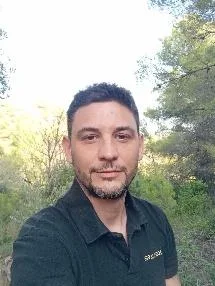

Fundadores
Melania y Miquel

Yoga · Meditación · Ayurveda
Melania Di Vara
Formadora en Yoga, Meditación y Ayurveda, con más de 10 años de experiencia acompañando procesos de autoconocimiento y sanación emocional.
Ver perfil · melaniadivara.com
Terapeuta · Life Coach
Miquel Canut
Terapeuta y Life Coach con más de 18 años de experiencia, facilitador del método El Monje con Traje de Raf Adams.
Ver perfil · miquelcanut.com [Pendiente: enlace]Equipo terapéutico
Acompañamiento profesional
SS
Terapeuta especializado en adicciones
Sergi Salinas
[Pendiente: biografía y foto de Sergi]
VF
Psicóloga holística
Victoria Fort
[Pendiente: biografía y foto de Victoria]

Terapeuta emocional · Coach
Erik Maiquez
Formador e instructor con más de 10 años de experiencia acompañando grupos de desarrollo personal y procesos individuales de sanación. Facilitador del curso online «Volver a casa».
[Pendiente: confirmar si Erik aparece en Equipo]